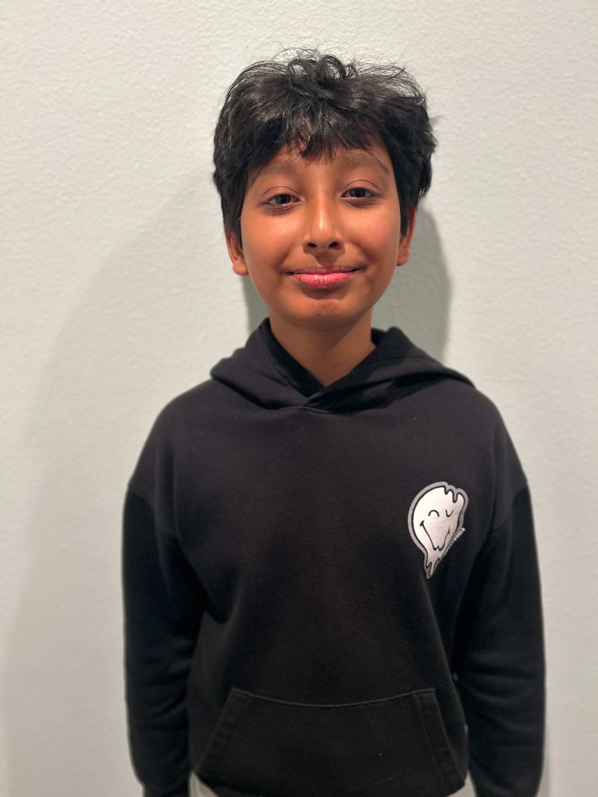
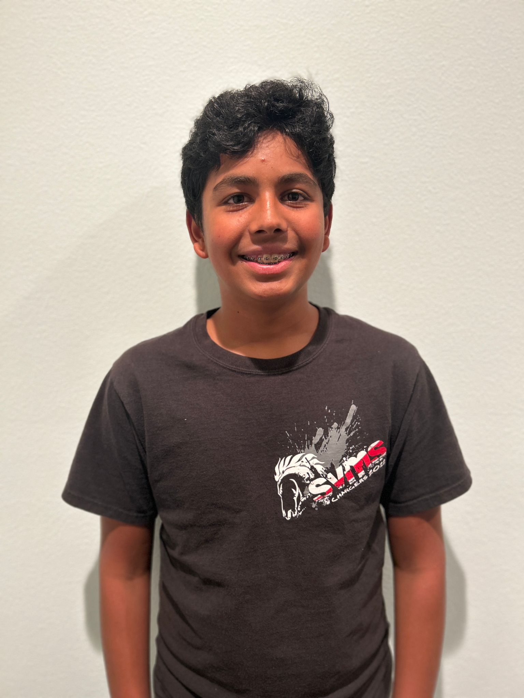

Meet the Co-Founders
BikeSight was created by two passionate students who believe every kid deserves a safer ride. Their mission: make advanced bike safety accessible and affordable for all.

Om Inamdar
(Co-Founder)
I'm a 7th grader at Sierra Vista Middle School with a passion for programming that began when I was just five years old. During a visit to my dad's workplace, I discovered my love for coding — and I've been hooked ever since. I use my programming skills to innovate, solve problems, and address challenges in society and the world around me.

Shreyas Rawat
(Co-Founder)
Shreyas is deeply passionate about creating innovative and advanced projects, ranging from game development to vehicle design and self-driving car technology. Creative and insightful, he is driven by a strong desire to make a meaningful impact on society and address pressing global challenges. With exceptional problem-solving abilities and a profound interest in technology, Shreyas is committed to leveraging innovation for positive change.
Together, Om and Shreyas built BikeSight to help kids everywhere ride smarter, safer, and freer. Their journey is just beginning—join the movement!